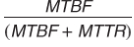
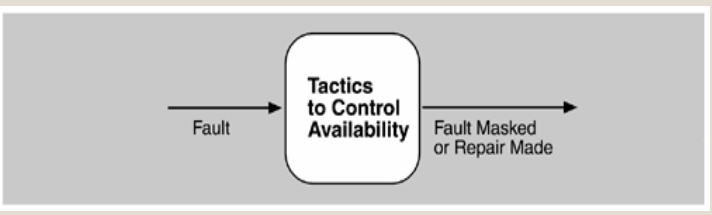
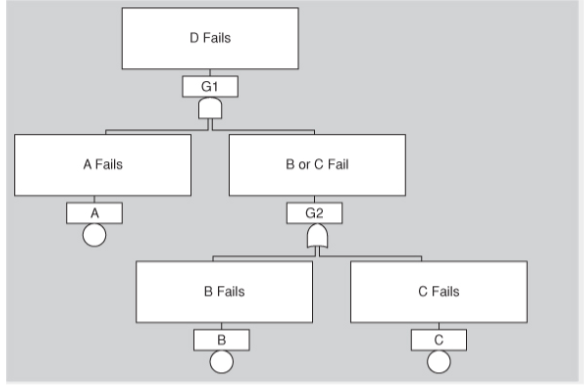

DISPONIBILIDAD
La capacidad de que el sistema esté total o parcialmente operativo al mismo tiempo que es requerido para manejar eficazmente las fallas que puedan afectar la disponibilidad del sistema.
La disponibilidad de un sistema se puede calcular como la probabilidad de que proporcionará los servicios especificados dentro de los límites requeridos durante un intervalo de tiempo especificado. Cuando se hace referencia al hardware, hay una expresión conocida que se usa para derivar la disponibilidad en estado estable:

donde MTBF se refiere al tiempo medio entre fallas y MTTR se refiere al tiempo medio para reparar.
Las tácticas de disponibilidad se pueden categorizar para abordar una de tres categorías: detección de fallas, recuperación de fallas y prevención de fallas.


OBJETIVO
La capacidad de que el sistema esté total o parcialmente operativo al mismo tiempo que es requerido para manejar eficazmente las fallas que puedan afectar la disponibilidad del sistema

TACTICAS
Tácticas Detección de fallas Ping
Echo Heartbeat
Excepción Recuperación de fallas
Recuperación
Preparación
Reparación Redundancia activa
Redundancia pasiva
Repuesto
Recuperación
reintroducción
Eliminación del servicio
Monitor de proceso
Transacciones

ARBOL DE FALLAS
Los árboles de fallas ayudan en el diseño del sistema, pero también pueden usarse para diagnosticar fallas en tiempo de ejecución. Si se produjo el evento principal, entonces (asumiendo que el modelo del árbol de fallas está completo), se han producido una o más de las fallas contribuyentes, y se puede usar el árbol de fallas para rastrearlo e iniciar las reparaciones.
